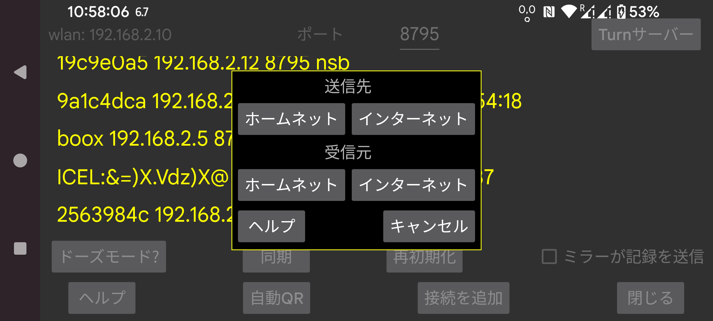

もう一方のスマートフォンの左メニュー→フォトでQRコードをスキャンすることで、ミラー接続のもう一方を設定できます。
中央左メニュー→ミラー→自動QRを使うと、接続の両側が自動的に生成されます。このスマートフォンから別のスマートフォンへすべてのデータを送信するのに利用できます。
この方法では、誤って多数の接続が生成されることがあります。不要な接続はそれをタッチして 変更→削除 で削除できます。
中央左メニュー→ミラー→接続を追加→QRを使うと、片方のスマートフォンで接続の片側を手動で設定し、もう一方はQRコードをスキャンして設定できます。